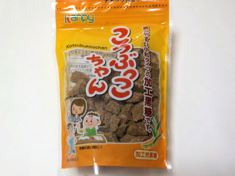

上野砂糖のこつぶっこちゃん。
2023/12/23

砂糖をおやつにするなんて変じゃない？とも思いましたが、パッケージに「仕事の合い間に、学習の合い間に、アウポーツのあとに」と書いてあったので、買って食べました。
小さい黒糖の塊を食べるんですが、ちょっとした隙間時間にサクッと糖分補給が出来て便利だと思いました。
実際に食べたところ、1度に食べる量は1かけら2かけらだったので一袋食べ終わるまでに結構期間がありました。
気分転換で飴玉を食べたりしますが、気分転換なので1粒もいらないです。これだったらちょびっとだけ食べれるので糖分の取り過ぎにならないかなと思いました。
無糖のタブレットを食べればいいんでしょうけど、それはそれでもの足りないって思ってしまします。